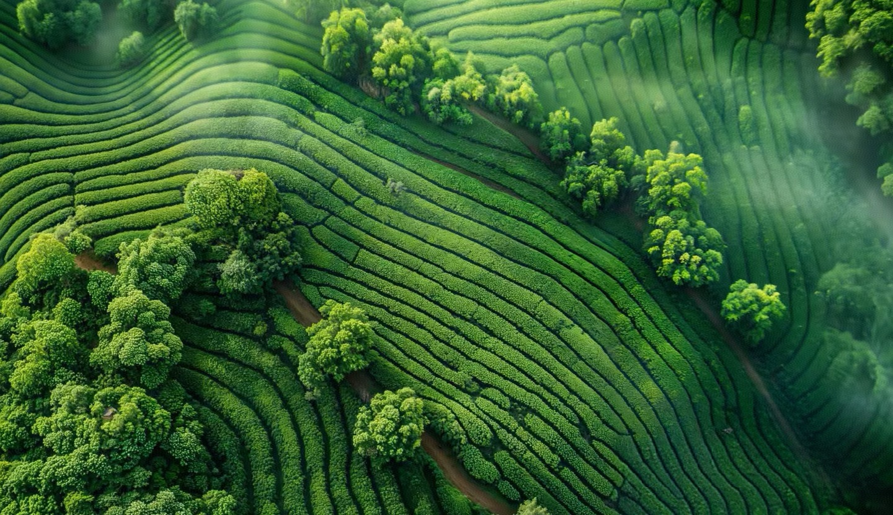
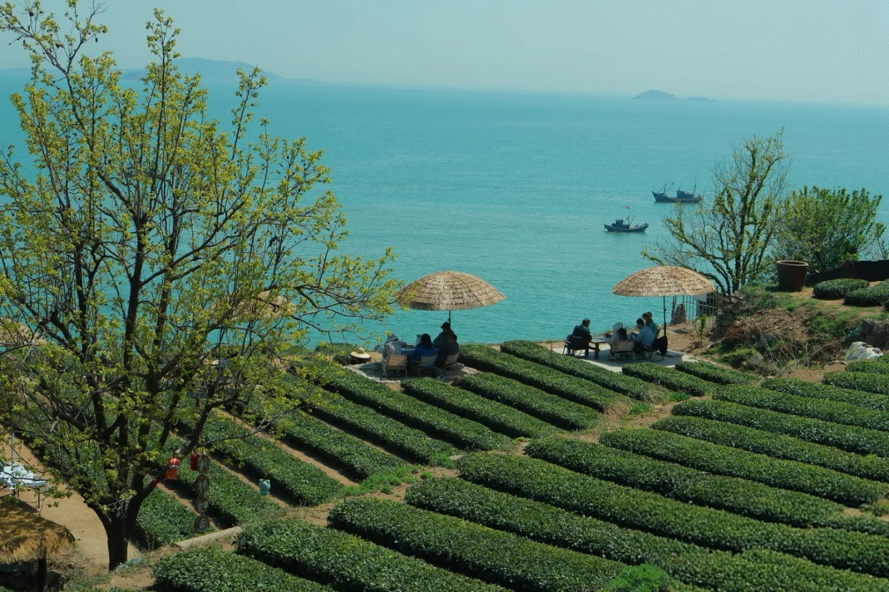
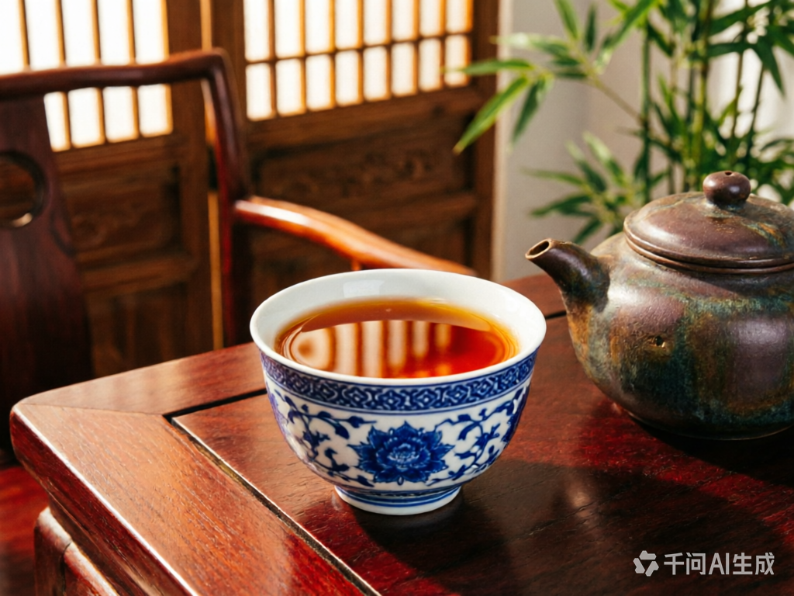
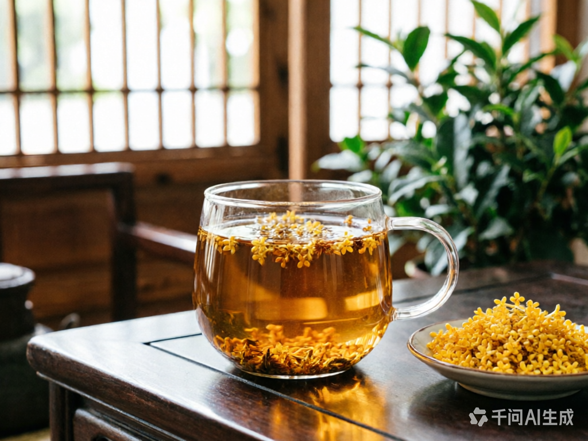
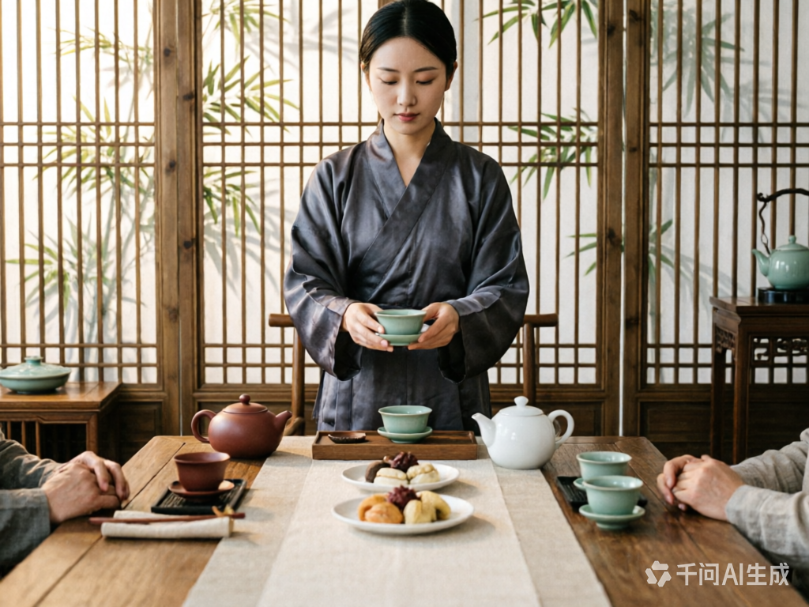
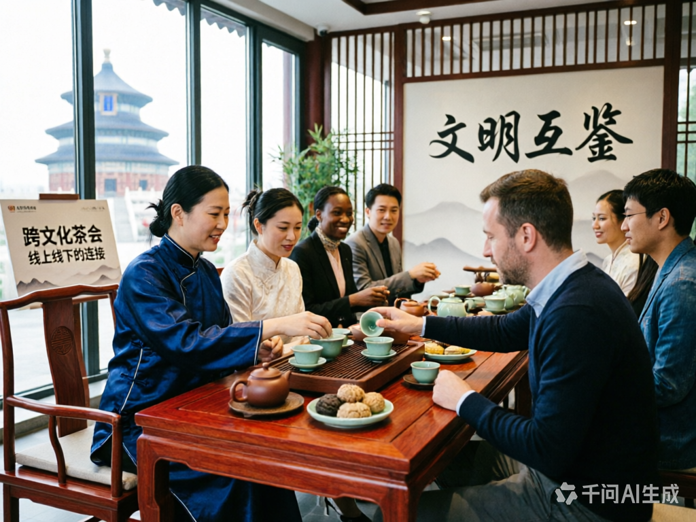
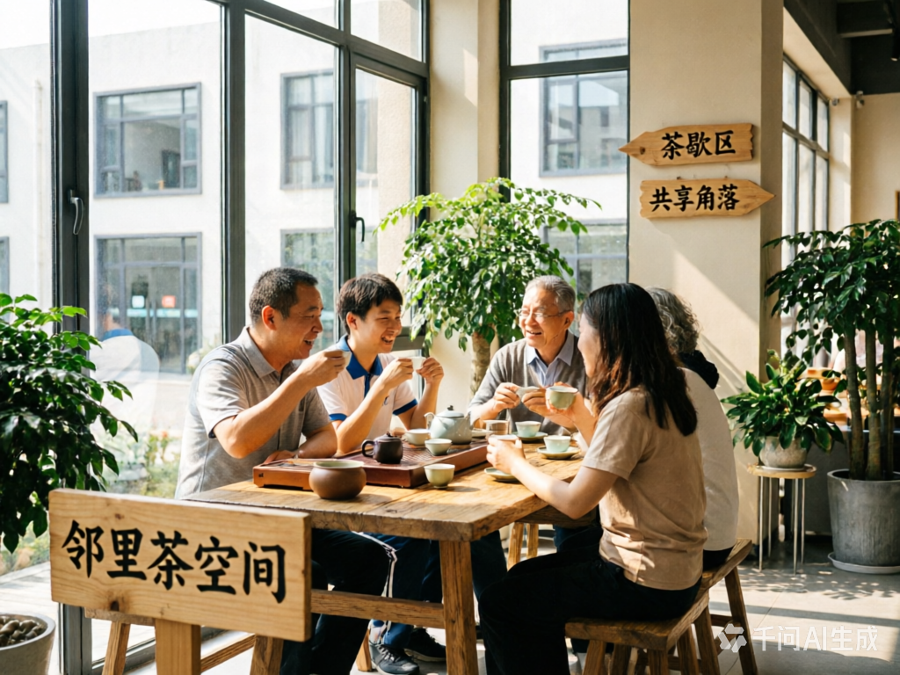
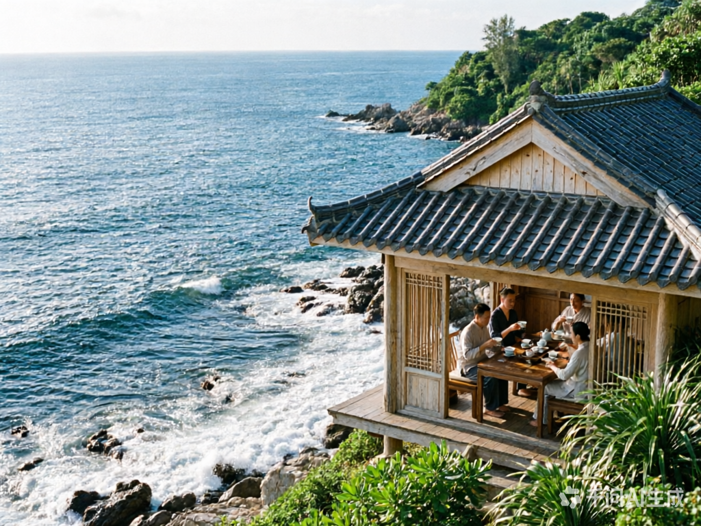
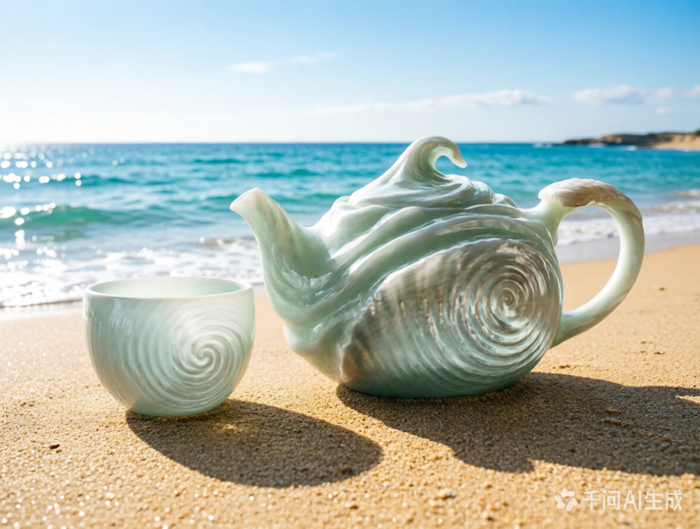
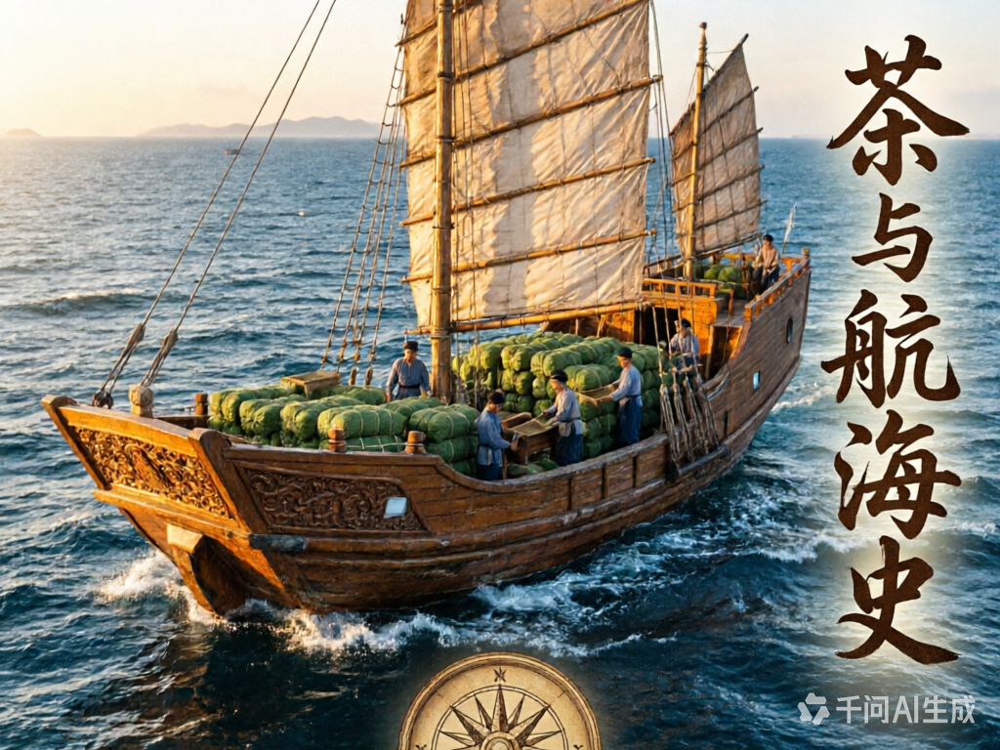

以茶为桥，连接山海
在温润的茶香中，感受桥的坚韧与海的辽阔，让每一次品茗都成为心灵的栖息。
探索茶韵
茶之温润
精选高山云雾茶，汤色澄澈如琥珀，入口回甘绵长。
桥之连接
以茶为媒介，搭建人与人、文化与文化的桥梁。

海之辽阔
茶汤如海，包容万象；茶香似浪，涤荡心灵。
茶品系列
每一款茶都承载着山海的馈赠，从采摘到烘焙，全程遵循古法工艺，保留茶叶最本真的风味。
云雾绿茶
产自海拔1200米高山，晨雾滋养，清香持久，回甘悠长。

陈年普洱
十年干仓陈化，汤色红浓透亮，口感醇厚顺滑，越陈越香。

桂花乌龙
鲜采金桂窨制，花香与茶韵交融，入口清甜，余韵不绝。
桥文化
茶是无声的桥梁，跨越地域、语言与文化的隔阂，让人与人之间多一份理解与温暖。

茶席礼仪
以茶待客，敬茶有序，传递尊重与诚意，延续千年东方礼序。

跨文化茶会
联合各国茶文化爱好者，举办线上线下茶会，促进文明互鉴。

社区茶空间
在城市角落打造开放式茶空间，让邻里因茶相聚，重建人际联结。
海韵
茶与海，皆是包容的象征。茶汤如海般深邃，茶香似浪般绵长，让人在喧嚣中找到内心的宁静。

海边茶寮
坐落于海岸线的茶寮，听涛品茗，感受海风与茶香的交织。

海洋主题茶器
以海浪、贝壳为灵感设计的茶器，将海的意象融入日常茶事。

茶与航海史
追溯茶叶随商船远航的历史，见证茶如何连接世界各大洲。